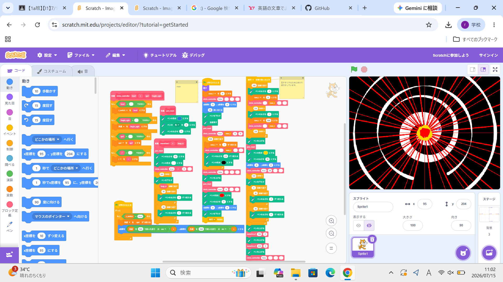
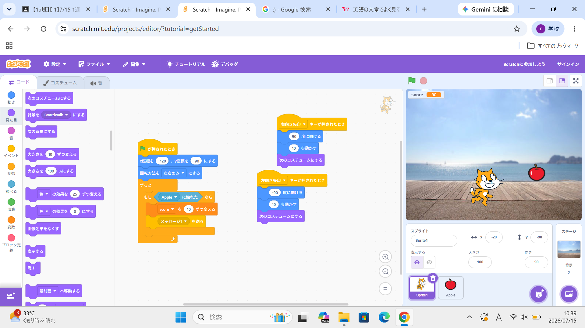

1週目のレポート ： 公大高専１年実習I-1
1a班5番 rYoYo
第1週目
1-1 サイエンスアート

1.内容
今回は主にscratchとgithubPagesを用いたWebサイトの作成＆公開方法について学んだ。
特にScratchでは変数や条件分岐、繰り返し処理そして順次処理について学び
それを応用して簡単なゲームとサイエンスアートを作成した。
2.感想
学習した内容を実践したときに私は、今まで様々なものを作ってきていたという経験のためか
特に難しいなとも感じることはなかった。
しかし、今回学んだことはこれから行う事すべての基盤となると思うので
軽んじる
ことなく
しっかりと覚えておこうと思った。
1-2 ゲーム

1.内容
サイエンスアートの作成時に学んだプログラミングの知識を用いて
キャッチゲームを作成した。同時に、1-1では学ばなかった
スプライトの編集方法や追加方法、音楽の追加方法についても学んだ。
2.感想
今回のキャッチゲームでは「右向き矢印」や「左向き矢印」による判定を
完全な別のスクリプトで行っていたことにより、ゲームがスタートしていなくても
動けるというバグが発生した。
そのため一つの親スクリプトで統合して他のプログラムを管理することの大切さについて
改めて学ぶことが出来た。
1-3 ホームページ作成
私のホームページ
1.内容
今回はGithubPagesを用いたwebsite作成では自己紹介をするサイトを公開した。
同時にどのようにしてhtmlを用いてサイトを編集するのかについても学んだ。
具体的には改行の方法やページタイトルの変え方、簡単なhtmlの構文についてなどである。
2.感想
学習した内容を実践したときに自分が感じた感想を
自分で考えた文章で作成する（50文字以上．100文字程度を推奨．※生成AIを使ってはいけない）
各ページへのリンク
1週目のレポート
2週目のレポート
3週目のレポート
私のホームページ